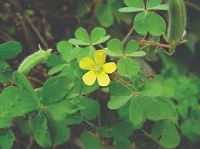
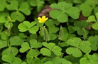
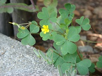

|
|
Identification
Wood Sorrel is a small plant with a height of 15 inches at the most. It has a sour lemon-like taste.
The leaves are heart shaped,
with a fold down the middle sometimes. They are in clusters of three, looking extremely
similar to three leaf clover. The flowers are usually yellow with five petals, looking like a tiny cucumber
before they blossom. This is a common weed, and one that I personally see all over my yard when not mowed.

Information
Close-up

|
|
When to look: Spring - Mid-Fall
Where to look: Likes moist soil, found on forest floors and in partial shade
Edible Parts:
|
Leaves

|
Leaves
- Can be eaten raw in salads, giving a zing
- Can be made into a lemonade-like tea
Flowers and Roots
- Flowers can be eaten raw in salads
- Flower buds (little cucumber-looking things) can be picked and eaten raw, tasting like lemon
|
Roadside

|
Wood Sorrel is a very common plant in missouri when not mowed down. I personally like it because
I can pluck off the flower buds and pop them in my mouth for a sour snack as I am gardening. It is
also a refreshing addition to your raw salads. There are claims of medicinal uses for this plant
but they are beyond the scope of this site.
|
|